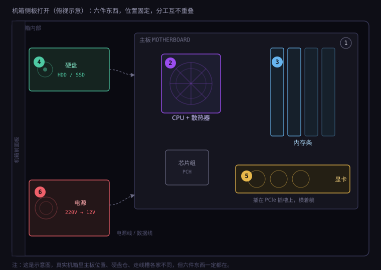
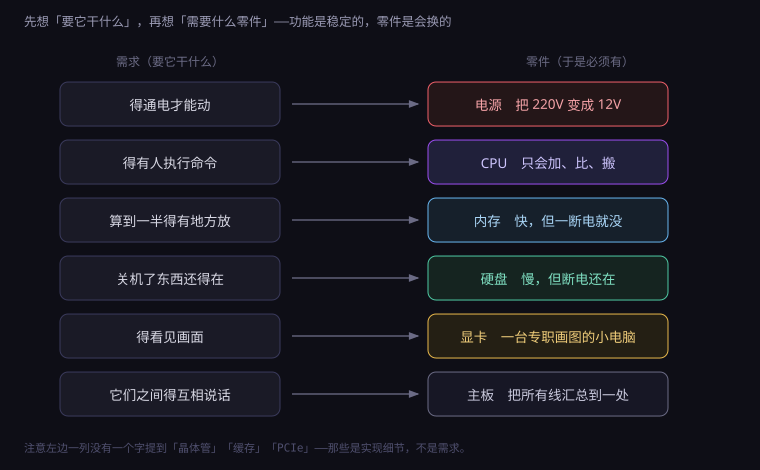
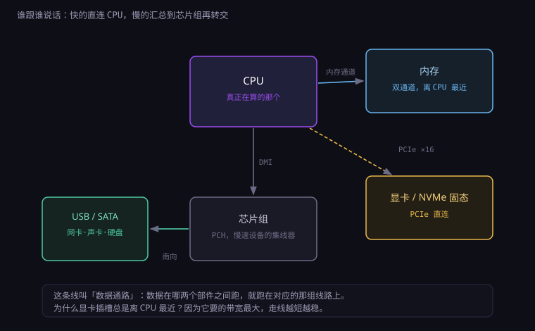
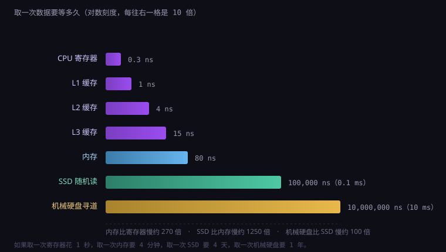

约 1.3 万字 · 4 张图 · 读完你能指着机箱里任意一块东西说清它是干什么的， 并且明白这套分法为什么套在手机、笔记本、服务器上也成立
「电脑」这个词太笼统了，笼统到没法回答任何具体问题。
就像「厨房」——你问一个厨师「厨房是什么」，他没法给你一句话。厨房是灶、是刀、是冰箱、 是水槽、是排烟、是那盏照得人眼睛疼的顶灯。你只有把每一样拆开，才能说清「为什么炒菜要先热锅」。
电脑也一样。你打开机箱侧板，看见的是一堆形状各异的板子、方块和线， 它们看起来毫无章法，但每一个都在回答一个非常具体的问题。
为什么值得先做这件事？因为整本书后面要讲的东西，绝大多数在物理上是看不见的： 电压的阈值、时钟的节拍、内存的地址、网络的端口、文件的后缀。 这些名词如果没有一个实物作为锚点，就会变成需要背诵的字符串。 而只要你先认下了「内存条」这个具体的长条形东西，后面讲「内存寻址」「内存泄漏」「虚拟内存」时， 你脑子里就有地方放它们。
还有一个更实际的理由：六件东西的分法，能套在几乎所有计算设备上。 台式机、笔记本、手机、服务器、路由器、智能音箱，全都逃不出这六个功能。 学会一次，到处能用。

绝大多数人学电脑硬件的顺序是错的。他们从零件名开始记：主板、CPU、内存、硬盘、显卡、电源。 背下来了，但一遇到「为什么这个要插在这儿」「为什么换个显卡要换电源」就卡住。
正确的顺序是从需求开始推。你想要的其实不是「一台电脑」，而是一个能完成某些事的工具。 把这件事拆开，需求只有五条，加上一条「让它们互相说话」，正好六条。

我们一条一条看。
墙上的插座给的是 220 伏交流电，而芯片要的是 1 伏左右的直流电。 中间必须有个东西负责转换和稳压。这就是电源。
「执行命令」听起来很高级，实际上它只会做三件极笨的事：把两个数加起来、比较两个数谁大、把一个数从这里搬到那里。 所有复杂的程序，都是这三件事的无穷组合。这就是 CPU。
CPU 一次只能握住极少数几个数（几个到几十个，叫寄存器）。要算一加二加三加到一万， 它不可能把一万个数都握在手里。必须有个更大的地方，随手就能存取。这就是内存。
内存有个致命问题：断电就清空。你写了三个月的文档，不能因为拔了插头就没了。 所以还需要一个慢一些、但断电不丢的地方。这就是硬盘。
严格说，不算「必须有」——服务器可以没有显示器。但对你桌上这台机器，屏幕是唯一的输出窗口。 而把「要显示什么」变成「屏幕上每个点该是什么颜色」，这件事的工作量大得离谱： 一块 2K 屏，每秒 144 帧，每帧 370 万个像素，每秒要算 5 亿个像素的颜色。 CPU 干不了这个活，得有个专职的。这就是显卡。
前五件东西如果各干各的，就是五个废铁。CPU 要把数据送到内存，内存要把数据送给显卡， 硬盘要把文件交给 CPU。这些「说话」如果靠手工接线，就是几千根线缠成一团， 而且换一个配件就得重新焊一遍。
解决办法很聪明：把所有线预先印在一块板子上，所有东西插上去就行。 这块板子本身不做任何计算，它只是「所有连接关系的物理形态」。这就是主板。
因为这套推导方式可以迁移。当你拿到一个没见过的东西——比如一台 NAS、一个路由器、 一块开发板——你不用记它的型号，只要问六个问题： 它怎么供电？谁在算？中间结果放哪？持久化在哪？怎么输出？它们怎么连？
答案会告诉你这东西的真实定位。比如一个路由器：供电很小、CPU 很弱、内存很小、 存储在闪存里、没有显示输出、所有东西挂在一个交换芯片上。 这个配置一读出来，你就知道它不可能跑大型程序——不是厂商偷懒，是需求决定的。
「六大件」不是行业标准术语，是一种便于记忆的分组。它之所以好用，是因为六个分组正好对应六种 不可互相替代的资源。
最容易问的问题是：为什么「存储」要算两个？因为快和持久在物理上是矛盾的。 越快的存储越接近「电信号直接读写」，但电信号一断就没了； 越持久的存储越依赖「把状态固定在某处」，而固定就需要时间。 这个矛盾不是工程师偷懒，是物理规律。所以只能做两层，用一层去补另一层的短板。
反过来，为什么电源不算「两个」？因为在台式机里它确实就是一个盒子。 但在笔记本里，它被拆成了「电池 + 充电管理」；在手机上，它被拆成了「电池 + 电源管理芯片」； 在服务器里，它被拆成了「两个冗余电源 + 配电板」。 分组会跟着形态变，功能不会变。
如果你拆过手机，会发现一个奇怪的事：里面根本没有「主板 + CPU + 内存 + 显卡」这四块独立的东西， 只有一块很小的板子，上面盖着几颗芯片。
六件东西并没有消失，只是被压缩了：
| 功能 | 在手机里变成了什么 |
|---|---|
| 计算 + 显示 | SoC（片上系统）：CPU、GPU、内存控制器、基带、图像处理器全做在一颗芯片里 |
| 内存 | 不是插槽，是一颗芯片直接叠焊在 SoC 上面（叫 PoP 封装），所以你根本看不到它 |
| 存储 | 一颗 UFS 闪存芯片，焊在主板上 |
| 供电 | 电池 + 充电管理芯片 + 一堆电源管理 IC |
| 连接 | 不再是一块大板，而是一小块高密度 PCB，甚至用柔性排线连接各部件 |
| 散热 | 没有风扇，靠石墨片、均热板把热摊到整个机身 |
这个对照解释了一个日常疑问：为什么手机内存不能像电脑一样升级？ 因为电脑的内存是「插在插槽里的独立零件」，而手机的内存是「叠在 CPU 头顶上的一层芯片」。 前者是模块化设计，后者是为了省空间做的堆叠封装。不是厂商不让你升，是物理上没有插槽这个东西。
顺带说清另一个常见混淆：手机宣传的「LPDDR5X」是内存（低功耗版 DDR）， 「UFS 4.0」是存储。两者都焊死，都不能换。
主板是机箱里最大的一块板。它上面密密麻麻焊着几千个元件，看上去像一座城市的航拍图。
但它的本质极其简单：一块多层印刷电路板（PCB），里面埋着几千条铜线。 这些铜线就是「导线」，只不过不是悬在空中的电线，而是压死在绝缘材料内部、肉眼看不见的走线。
一块普通主板的 PCB 有 6 到 12 层。为什么这么多层？因为线太多，一层放不下。 这就好比一个城市的地铁：一号线在地下一层，二号线在地下二层，它们在换乘站打通。 PCB 的「换乘站」叫过孔（via），是一个钻穿几层的小孔，里面镀铜。
你俯视一块主板，能认出这些东西：
| 部件 | 作用 | 外形特征 |
|---|---|---|
| CPU 插槽 | 固定 CPU，把上千个触点接到主板上 | 方形金属框，带压杆 |
| 内存插槽 | 插内存条，通常 2 或 4 条 | 细长的卡槽，两头有卡扣 |
| PCIe 插槽 | 插显卡、采集卡、网卡 | 长的和短的塑料槽，长的那个有加固金属 |
| M.2 插槽 | 插固态硬盘，直接贴在板上 | 一个小槽 + 一颗螺丝孔 |
| SATA 接口 | 接机械硬盘、2.5 寸固态 | 一排 L 形小口 |
| 供电接口 | 从电源取电 | 24 针大插头 + 8 针小插头 |
| 后置 IO | USB、网口、音频、视频输出 | 板子边缘那一排 |
| BIOS 芯片 | 存开机自检程序和设置 | 一颗 8 脚小芯片，有时带贴纸 |
| CMOS 电池 | 关机后维持时间和 BIOS 设置 | 一颗银色纽扣电池 |
| 芯片组 | 把慢速设备汇总后转交给 CPU | 一块盖着散热片的方形芯片 |
这是主板上最容易被忽略、但最重要的一块。它现在通常盖着一块金属片，你看到的是「散热片」， 下面才是芯片本体。
为什么需要它？因为 CPU 的引脚太宝贵了。 一颗消费级 CPU 有一千多个触点，听起来很多，但要分给供电（几百个）、 内存通道（两百多个）、PCIe 通道（几十到上百个）、各种控制和调试信号，剩不下多少。
而 USB 接口可能有十个、SATA 可能有四个、还要接网卡、声卡、WiFi、蓝牙、RGB 灯控。 这些东西加起来需要的连线数量，远超 CPU 剩下的引脚。
所以工程师做了个折中：把所有这些慢速设备先接到一颗专门的芯片上，再由这颗芯片用一条高速通道跟 CPU 说话。 这颗芯片就是芯片组（PCH）。它像一个小区的快递驿站：所有快递先送到驿站， 再由驿站统一送到你家门口，而不是让每个快递员都敲你家的门。

主板有标准尺寸，最常见的是三种：
| 板型 | 尺寸 | 能插什么 |
|---|---|---|
| ATX | 305 × 244 mm | 4 条内存、最多 3 块长显卡、7 个扩展槽 |
| Micro-ATX | 244 × 244 mm | 4 条内存、2 块显卡、4 个扩展槽 |
| Mini-ITX | 170 × 170 mm | 2 条内存、1 块显卡、1 个扩展槽 |
尺寸决定了「能插几块卡」，但不决定性能。这是一个常见的误解： 换一块更贵的主板，电脑不会变快。主板对性能的影响几乎为零， 它影响的是「能插什么、能不能超频、接口够不够用」。
那贵的主板贵在哪？三处：供电模块（相数多、用料好，能喂饱高功耗 CPU）、 接口数量（多几个 USB、多一个网口、多两个 M.2）、 BIOS 质量（内存兼容性、超频选项、更新频率）。这些都是「扩展性」和「稳定性」， 不是「速度」。
拆开分类，大概是这样：
所以「一千多个针脚」不是一个设计上的炫耀，而是被供电和带宽逼出来的。
如果你看过 2005 年前后的主板，会记得上面有两块盖着散热片的芯片，一块叫北桥，一块叫南桥。
北桥管「快」的东西：内存、显卡。南桥管「慢」的东西：USB、硬盘、音频、网卡。 CPU 要先通过北桥才能访问内存，所以北桥又热又关键。
后来发生了一件事：内存控制器被搬进了 CPU。 CPU 直接跟内存说话，不再经过北桥。北桥的核心职责没了，于是它消失了。 剩下的南桥改名叫 PCH，就是今天你看到的那块盖着散热片的芯片。
这次合并带来的直接结果是：内存延迟降低（少了一跳），主板成本下降， 但 CPU 的引脚数暴涨（因为内存通道的线要直接引到 CPU 上）。 这也是为什么今天的 CPU 背面看起来比十年前密得多。
CPU 是机箱里最贵的单品，也是被神秘化得最厉害的一个。
先把神秘感打掉：它只会做三件事——加、比、搬。 把两个数加起来；比较两个数谁大；把一个数从 A 搬到 B。 就这三件，没有第四件。
你用电脑做的一切——看视频、打字、玩游戏、跑 AI——在这颗芯片看来， 都是这三件事被拆成几亿个小步骤、按顺序执行的结果。 第 1.3 节会把这件事拆到底，现在你只需要知道它「笨得出奇，但快得离谱」。
你看到的那个盖着风扇的大方块，其实不是 CPU 本体。
所以严格说，你花钱买的是那块一两平方厘米的硅片，其余都是包装和接口。 一块晶圆能切出几百颗这样的芯片，这就是为什么 CPU 工厂的良率如此重要——第 1 部会讲到。
一颗现代 CPU 里，按面积排，大概是这几块：
| 部分 | 干什么 | 占面积 |
|---|---|---|
| 核心（Core） | 真正执行指令的地方，一颗 CPU 有 6~24 个 | 约 25% |
| L1 / L2 缓存 | 每个核心私有的极速小仓库 | 约 15% |
| L3 缓存 | 所有核心共享的大仓库 | 约 30% |
| 内存控制器 | 直接跟内存条说话 | 约 8% |
| PCIe 控制器 | 管显卡和固态的通道 | 约 8% |
| 核显 | 不插独显时负责出画面（不是所有型号都有） | 约 10% |
| IO 与其他 | DMI、电源管理、安全模块 | 约 4% |
主频是 CPU 内部的一个节拍器，每秒震动几十亿次。3.5GHz 就是每秒 35 亿次。 每一次节拍，芯片里不同区域各自推进一小步：取一条指令、算一次加法、写回一个结果。
所以主频高意味着「每秒能做更多小步」，但不等于「更快」。 因为不同 CPU 走一步能干的事不一样多——这个指标叫 IPC（每周期指令数）。 真正决定性能的是：IPC × 主频 × 核心数 × 软件能不能并行。 这四个乘数里任何一个接近零，整机就快不起来。第 1.3 节会逐个拆。
硅片本身极薄（不到 1 毫米），而且发热极其集中：一颗 200 瓦的芯片， 发热面积可能只有 2 平方厘米。这个「热流密度」比核电站堆芯还高。
如果让散热器直接压在这么小、这么脆的硅片上，会有两个问题： 一是压碎，二是热量挤在一个点上散不出去。
金属盖的作用就是把热量从一个小点摊开到一大片，再交给散热器。 它和硅片之间用焊料或硅脂连接。Intel 有一代产品用了硅脂代替钎焊， 导致高负载时温度明显偏高，被玩家骂了好几年——这不是玄学， 硅脂的导热系数只有钎焊料的十分之一左右。
内存条是你最容易认错的东西——因为它和 M.2 固态硬盘长得很像， 都是「细长的绿色小板上焊着几块黑芯片」。区别在插法：内存竖着插，M.2 平躺着贴。
答案只有一个字：快。
先看一张对比图。

图里那个类比值得再看一遍：如果 CPU 取一次寄存器算 1 秒， 取一次内存要等 4 分钟，取一次机械硬盘要等 1 年。
这就是内存存在的全部理由。CPU 每秒要取几亿次数据，如果每次都去硬盘拿， 它 99.99% 的时间都在等待。所以必须有一个「比硬盘快几千倍、比寄存器慢但容量大得多」的中间层。
内存的每个比特，是一个微型电容：充上电代表 1，放掉电代表 0。 电容会漏电，几十毫秒就会漏光，所以内存必须不停地「刷新」——每隔一小段时间把所有比特重写一遍。
这种「靠持续供电维持状态」的存储叫易失性存储。 断电的瞬间，所有电容放电，所有数据归零。这不是设计缺陷，是它的工作原理本身。
反过来说，正因为不需要「把状态固定下来」，它才能做得那么快。 快和持久，在物理上是互斥的。这句话值得记住，第 2.3 节会反复用到。
| 参数 | 意思 | 实际影响 |
|---|---|---|
| 容量 | 8 / 16 / 32 / 64 GB | 决定能同时开多少程序。不够就会卡，且是那种「硬盘灯狂闪」的卡 |
| 代际 | DDR4 / DDR5 | 接口不同，不能混插。DDR5 带宽更高 |
| 频率 | 3200 / 6000 MHz | 带宽。对核显和某些游戏影响明显 |
| 时序 | CL16 / CL30 | 延迟。数字越小越好，但和频率要一起看 |
| 通道 | 单通道 / 双通道 | 影响最大的一项，插两根比插一根快近一倍 |
最后一项值得单独说。「双通道」的意思是：主板上有两组独立的内存通道， 如果两根内存条分别插在两组上，CPU 可以同时从两边取数据，带宽翻倍。
这就是为什么主板上的内存插槽通常是「隔一个插」——四个槽，插第 2 和第 4 个。 插错了（比如插 1 和 2）就变成单通道，性能白白损失一大截， 而且这种损失在任务管理器里看不出来，很多人用了几年都不知道自己插错了。
拿起一根内存条，金手指那一侧有一个不在正中间的缺口。这个缺口叫防呆口。
它的作用很物理：DDR4 和 DDR5 的缺口位置不同，所以你把 DDR5 插进 DDR4 的槽里， 物理上插不进去。这就避免了「插得进去但电压不对，一通电烧一片」的惨剧。
同样的设计遍布整个机箱：CPU 插槽有三角标记对齐、显卡金手指有缺口、 供电接口是不同针数、M.2 的缺口也分 B key 和 M key。 硬件工程里，能用物理形状避免的错误，就绝不用说明书去避免。
前面说电容会漏电，具体数字是：一个存储单元的电容只有几十飞法（10⁻¹⁵ 法拉）， 漏电时间常数在几十到几百毫秒量级。
JEDEC 标准规定，每一行存储单元必须在 64 毫秒内被刷新一次。一颗 16GB 的内存有十几万行， 分摊下来，内存控制器每秒要做几千次刷新操作。
这些刷新操作要占用带宽，也是内存待机功耗的主要来源之一。 手机之所以能待机好几天，一部分功劳在于 LPDDR 的自刷新模式—— 刷新由内存自己管，CPU 可以彻底断电。
硬盘是机箱里唯一「断电之后还留着东西」的件。这个特性听起来平平无奇， 但它决定了整个计算机的形态：没有它，每次关机你的一切工作都会归零。
因为它的数据不在「电」里，而在「物质的形状」里。
内存靠电容存电，读写就是测电压、充放电，本质是电信号在跑，几乎是光速。 硬盘要把状态变成某种能被检测到的物理形态：机械硬盘是磁化方向，固态硬盘是浮栅里的电子数量。 这两种转换都需要时间，而且时间不在一个量级上。
打开一块机械硬盘（别真打开，一进灰就废了），你会看到：
7200 转/分意味着每秒钟转 120 圈，盘片边缘的线速度大约每秒 100 米。 磁头在这么快的表面上方，保持几纳米的距离——这个距离是什么概念？
这个过程有两个无法回避的延迟：寻道时间（磁头移动到正确磁道，平均 8~10 毫秒） 和旋转延迟（等正确的扇区转到磁头下面，平均半圈，约 4 毫秒）。 加起来一次随机读要十几毫秒，比内存慢十万倍。
但机械硬盘有一个固态比不了的优势：便宜、容量大。 同样的钱，机械能买到四到八倍的容量，而且长期不通电也不会丢数据。 所以今天它还没死，只是退到了「仓库」的位置——放电影、放备份、放冷数据。
固态硬盘（SSD）内部是一块电路板，上面焊着几颗闪存颗粒和一颗主控芯片：
没有机械部件，所以随机读只要 0.1 毫秒左右，比机械快一百倍。 这就是为什么把系统盘从机械换成固态，开机会从 40 秒变成 8 秒—— 开机过程中要读几千个小文件，每一个都是一次随机读，机械硬盘每次都要寻道，固态不用。
但固态有两个机械没有的麻烦：
第一，写入前必须先擦除。闪存的物理特性是「只能按块擦、按页写」， 一个块通常 4MB，一页 4KB。你想改一个 4KB 的页，得把整个 4MB 的块读出来、改掉那一页、擦掉整块、再写回去。 这个过程中实际写入的数据量可能是你要求的好几倍，叫写放大。 主控要做「垃圾回收」来缓解，但回收本身又占用带宽。
第二，每个单元有寿命。浮栅反复写入会把绝缘层磨坏。 TLC 颗粒大约能擦写 1000~3000 次，QLC 只有几百次。 厂商用「TBW」（总写入字节数）标注寿命，一块 1TB 的消费级固态通常是 600TBW 左右。 按每天写 50GB 算，能用三十多年——所以对普通用户，寿命基本不是问题， 真正容易坏的是主控和突然断电导致的映射表损坏。
| 接口 | 通道 | 实际速度 | 外形 |
|---|---|---|---|
| SATA | 走芯片组，SATA 协议 | 约 550 MB/s | 2.5 寸方块，或 M.2 外形但走 SATA |
| M.2 NVMe（PCIe 3.0） | 直连 CPU 或芯片组 | 约 3500 MB/s | 细长条，平贴在主板上 |
| M.2 NVMe（PCIe 4.0） | 直连 CPU | 约 7000 MB/s | 同上 |
| M.2 NVMe（PCIe 5.0） | 直连 CPU | 约 12000 MB/s | 同上，通常需要散热片 |
注意 SATA 那行的天花板：600 MB/s 是 SATA 协议本身的上限，跟颗粒多快没关系。 这就像一条限速 60 的公路，你的车能跑 300 也没用。
这是一个很自然的想法：既然内存那么贵、固态那么大，为什么不直接用固态当内存？
三个理由，一个比一个硬：
但有意思的是，操作系统确实在拿硬盘当内存用，这个东西叫「虚拟内存 / 交换文件」。 它的代价就是上面三条：一旦开始频繁换页，系统会卡到无法使用， 硬盘灯狂闪，鼠标都不动——这个现象有个专门的名字叫「颠簸」（thrashing）。 它不是「电脑坏了」，是物理规律在收账。
显卡是机箱里第二贵的件，也是最容易被误解的件。
很多人以为它是「一块给 CPU 打下手的芯片」。不对。 显卡是一台完整的计算机：它有处理器、有内存、有供电、有散热、有自己的固件和总线。 插上它，你的机箱里就有了两台电脑。
| 显卡上的部件 | 对应电脑里的什么 |
|---|---|
| GPU 芯片 | CPU |
| 显存（GDDR6X / GDDR7） | 内存 |
| 显卡 BIOS | 主板上的 BIOS |
| 供电模块（VRM） | 主板供电 + 电源 |
| 散热器（风扇 + 热管 + 均热板） | CPU 散热器 |
| PCIe 金手指 | 主板总线 |
| HDMI / DP 接口 | 显示输出 |
所以「显卡坏了」不一定整机不亮——如果 CPU 有核显，拔掉独显照样能用。 这也是排查故障时最有用的一个判断：把显卡拔了，用核显开机，能亮就是显卡的问题。
三个原因，都跟「功率密度」有关：
这是理解显卡的核心。两者的设计哲学完全相反：
| CPU | GPU | |
|---|---|---|
| 核心数 | 6~24 个 | 几千到一万多个 |
| 单个核心 | 复杂、强大，能处理分支、预测、乱序执行 | 简单、弱小，只会做基本运算 |
| 擅长 | 少量、复杂、有先后依赖的任务 | 海量、简单、互相独立的任务 |
| 典型工作 | 判断「下一步该干什么」 | 算「这一百万个像素各是什么颜色」 |
打个比方：CPU 是一个全能的老工程师，什么都会，但只有一双手； GPU 是一万个只会拧螺丝的工人，但可以同时开工。 拧螺丝的活给老工程师是浪费，画图纸的活给一万个工人是灾难。
两者都是「断电就没」的存储，但侧重完全不同：
| 内存（DDR5） | 显存（GDDR6X） | |
|---|---|---|
| 带宽 | 约 80 GB/s（双通道） | 约 1000 GB/s |
| 延迟 | 低（80ns） | 较高 |
| 容量 | 大（16~128GB） | 小（8~24GB） |
| 为什么这样设计 | CPU 要频繁随机访问，延迟优先 | GPU 要一次搬几亿个像素，带宽优先 |
所以「显存不够」的症状和「内存不够」完全不同： 内存不够是整机卡顿、硬盘狂转；显存不够是游戏突然掉帧、画面变糊、或者直接报错退出。
核显（集成显卡）不在显卡上，它在 CPU 芯片内部，共享系统内存。 它的性能只够办公、看视频、玩轻量游戏，但它的优点是省电、省空间、不需要额外供电。
笔记本几乎都用核显做日常显示，有独显的机器会让两者共存： 看网页用核显（省电），开游戏切到独显（性能）。这个切换由驱动和操作系统协调， 有时候会出 bug——比如游戏跑在核显上导致极卡，这就是「双显卡切换问题」。
这是最近十年最大的变化。GPU 的本质是「大规模并行计算器」， 而碰巧图形渲染是一种大规模并行计算。只要一个问题能拆成几万个互不依赖的小计算， GPU 就能干得比 CPU 快几十倍。
今天用 GPU 干的事包括：训练神经网络、科学计算（分子模拟、流体力学）、 视频转码、密码破解、挖矿（曾经）、甚至股票期权定价。 这也是为什么一张游戏显卡能卖到上万块——买它的人不一定在打游戏。
PCIe 的通道是直连 CPU 的，那几十根差分线要在主板上走几十厘米。 信号频率越高，走线越长，衰减和干扰越严重。所以工程师把最长的 x16 插槽放在离 CPU 最近的位置， 走线最短，信号最干净。
这也是为什么主板布局不能随便改：不是审美问题，是电气性能问题。
PCIe 通道数是有限的。消费级 CPU 通常提供 20~28 条：
不够用的时候，主板厂商会做「拆分」：把 x16 拆成 x8 + x8，或者让某个 M.2 跟 SATA 共用通道。 结果就是：插满固态之后，某个 SATA 口突然不能用了；或者显卡只跑在 x8 上，性能损失 2%~5%。
这不是故障，是带宽不够时的取舍。买主板前看说明书里的「通道分配表」， 就是为了避免这种「插上才发现」的坑。
电源是机箱里唯一一个「完全不参与计算」的部件。它只做一件事： 把墙上的 220 伏交流电，变成芯片要的 12 伏、5 伏、3.3 伏直流电。
为什么是这几个电压？因为主板和显卡的供电模块要把 12 伏再降压到 1 伏左右给芯片用。 先用 12 伏传输（电流小、损耗低），到了芯片旁边再降压，这是电力工程的常规做法。
很多人以为「500W 电源」就是「每小时耗 0.5 度电」。不是。
瓦数是它能稳定输出的最大功率，是能力上限，不是实际消耗。 实际消耗由你的配置决定：一台办公机可能只吃 80 瓦，一颗高端显卡单独就能吃 400 瓦。 所以 850W 的电源带办公机，一天也用不了几度电。
反过来，瓦数不够会怎样？轻则高负载时自动重启，重则电源保护性关机， 最惨的是劣质电源直接烧掉，把主板和硬盘一起带走。
它衡量的是转换效率：输入 100 瓦，能输出多少瓦给电脑，剩下的变成热。
| 等级 | 20% 负载 | 50% 负载 | 100% 负载 |
|---|---|---|---|
| 白牌 | 80% | 80% | 80% |
| 铜牌 | 82% | 85% | 82% |
| 金牌 | 87% | 90% | 87% |
| 白金 | 90% | 92% | 89% |
| 钛金 | 92% | 94% | 90% |
效率低不只是浪费电，还意味着更多热量留在电源里，风扇要转得更快，噪音更大。 一台 500 瓦负载的机器，80% 效率要产生 125 瓦废热，94% 效率只产生 32 瓦。
因为它是唯一一个「坏了会带走别人」的部件。
内存坏了，换一根；显卡坏了，换一张；硬盘坏了，数据没了但机器还在。 电源坏了，它可能把 12 伏的浪涌直接灌进主板、显卡、硬盘， 一次带走半个机箱。
便宜电源省在哪？省在滤波电容、省在保护电路（过压、过流、短路、防雷）、 省在变压器用料。这些你从外面看不出来，只能靠品牌口碑和拆解评测。
第一个坑：虚标。有些杂牌电源标「峰值 600W」，实际持续输出只有 350W。 计算机吃的不是峰值而是持续功率，标峰值等于没标。
第二个坑：瞬态功率。现代显卡有一个特性：它会在几毫秒内把功耗从 50 瓦拉到 400 瓦， 再掉回去。这个瞬间的尖峰叫「瞬态功耗」，可以超过标称值的一倍。 如果电源的过流保护太灵敏，就会误判为短路而关机——这就是为什么有些高端显卡 「换个大电源就好了」，其实不是瓦数不够，是瞬态响应跟不上。
很多人把散热当成「锦上添花」：能转就行，风扇吵就吵点。
这个认知在二十年前还勉强成立，今天是彻底错的。散热直接决定性能， 因为现代 CPU 和 GPU 都有一个机制叫「温度墙」。
芯片有一个安全温度上限（CPU 通常 95~100°C，GPU 约 83~90°C）。 一旦接近这个温度，芯片会主动做两件事：
这两件事合起来叫「热降频」。结果是：你的 CPU 明明标着 4.5GHz， 跑重活时却只有 3.0GHz，性能掉了三分之一，而你从任务管理器里只看到「CPU 占用 100%」。
所以「电脑用了两年变慢了」这件事，很大一部分不是软件变重了， 是灰尘堵住了散热器，导致降频更早发生。
| 方式 | 原理 | 优点 | 缺点 |
|---|---|---|---|
| 风冷 | 热管把热导到鳍片，风扇吹走 | 便宜、可靠、寿命长 | 体积大、有噪音上限 |
| 一体式水冷 | 水泵把冷却液送到冷排，风扇吹冷排 | 散热强、机箱内空间好安排 | 贵、有水泵噪音、有漏液风险（很低） |
| 被动散热 | 只靠大块金属自然对流 | 完全无声 | 只能压低功耗芯片 |
很多人以为硅脂是「导热的主力」。恰恰相反，硅脂的导热能力比金属差几十倍。
它的作用是填缝。金属表面在微观上是坑坑洼洼的，两块金属直接压在一起， 真正接触的面积可能只有 10%，其余都是空气。而空气是极差的热导体。
硅脂把那些空隙填满，让热能从「金属→空气→金属」变成「金属→硅脂→金属」。 所以正确的用法是薄薄一层：刚好填平缝隙就行，涂厚了反而增加热阻。
机箱里的空气要形成方向：前面进冷风，后面和上面出热风。 这叫「正压」——进风量略大于出风量，机箱内气压稍高，灰尘就不容易从缝隙钻进来。
反过来，如果出风大于进风（负压），空气会从所有缝隙往里挤，包括没有滤网的地方， 结果就是三个月积一层灰。
同样的芯片放进笔记本，温度会高 20 度。原因不是厂商不用心，是物理限制：
所以笔记本的性能释放，本质上是在「温度」和「噪音」之间做取舍。 同一个 CPU 在不同笔记本上跑分能差 40%，原因就在这里——不是芯片不同，是散热预算不同。
现在要诚实一点：「六大件」是一个便于理解的分组，不是严格的分类。 机箱里还有一些东西，既不重要到值得单列，也不能完全忽略。
| 东西 | 作用 | 为什么没进六件 |
|---|---|---|
| 机箱 | 固定所有部件、形成风道、屏蔽电磁干扰、接地 | 它是结构件，不参与计算也不参与存储 |
| 网卡 / 声卡 | 连网、出声 | 现在都集成在主板上了，独立卡只有专业需求才用 |
| 风扇、RGB 控制器 | 散热、装饰 | 附属设备 |
| CMOS 电池 | 关机后维持时钟和 BIOS 设置 | 一颗纽扣电池，但它坏了会让你「每次开机时间都不对」 |
| TPM 模块 | 存加密密钥，支持 BitLocker | 通常是主板上的一个小芯片或 CPU 内置 |
这些东西里，最值得记住的是 CMOS 电池。 它的症状非常典型：每次断电重启，系统时间回到 2010 年，BIOS 设置全部恢复默认， 开机时提示「Press F2 to enter setup」。换一颗几块钱的 CR2032 就好了。
这是「知道了就一秒解决，不知道能折腾一星期」的典型例子。 本书后面会不断出现这种「症状 → 机制 → 一分钟解决」的知识点。
如果你手边有一台台式机，可以跟着做一遍。没有也没关系，看图也一样。
打开侧板后，第一眼看到的最大结构是主板。以它为参照物，其他都好找：
错认一：把散热器当 CPU。 你看到的那个大铝块或水冷头，只是散热器。真正的 CPU 在它下面，被压住了。 想看 CPU 得先拆散热器——但不建议新手拆，因为硅脂要重涂，针脚容易弯。
错认二：把 M.2 固态当内存。 两者长得确实像：都是细长的小板，都焊着黑色芯片。区别是内存竖着插在插槽里， M.2 平躺着用一颗螺丝固定在主板上。
错认三：把芯片组的散热片当 CPU。 主板右下角还有一块盖着金属片的方形芯片，那是芯片组（PCH）。 它的散热片通常比 CPU 的小得多，而且位置偏下偏右。
认完实物，下一个实用技能是看懂配置单。下面这张是典型的中端游戏机：
CPU i5-13400F
主板 微星 B760M
内存 金士顿 16G DDR4 3200
固态 致态 1TB NVMe
显卡 RTX 4060 8G
电源 航嘉 600W
机箱 先马 平头哥逐行拆开：
i5-13400F：i5 是档位（i3 入门 / i5 主流 / i7 高性能 / i9 旗舰）；
13 是第 13 代；400 是这一代里的型号，数字越大越强；
F 表示没有核显——所以这台机器必须有独立显卡才能亮屏。B760M：B760 是芯片组型号（B 系列主流、Z 系列可超频、H 系列入门）；
M 是 Micro-ATX 板型，比标准 ATX 小一圈。16G DDR4 3200：容量 16GB、第四代、频率 3200MHz。这里只有一根，
所以是单通道——同价位换成「8G×2」会明显更快。1TB NVMe：容量 1TB，走 NVMe 协议（比 SATA 快五到十倍）。RTX 4060 8G：型号 + 显存容量。8G 显存意味着 2K 高画质会吃紧。600W：电源的最大持续输出。带 4060 够用，带 4080 就不够了。这张单子能干什么？1080p 高画质游戏流畅，4K 视频剪辑会吃力， 本地跑大模型只能跑 7B 级别的量化版本（显存只有 8G）。 它缺什么？散热器（i5 盒装自带一个够用的）、显示器、键鼠。
这一节是全书唯一的「实物锚点」。后面每讲到一层抽象，都会回到这六件东西上。 先把对应关系给你，以后读到某一章觉得飘了，可以回来对一下。
| 这一节的件 | 后面在哪里被拆开讲 | 会回答什么问题 |
|---|---|---|
| 主板 | 1.2 逻辑门 / 1.3 CPU / 4.3 端口 | 板子上那些线到底是什么信号 |
| CPU | 1.3 取指执行 / 1.4 编译器 | 它凭什么能执行「命令」 |
| 内存 | 2.3 虚拟内存 / 1.1.3 补码 | 地址是什么、为什么会有内存泄漏 |
| 硬盘 | 2.4 文件系统 / 3.1 一切都是字节 | 文件到底是什么、删除是不是真删了 |
| 显卡 | 9.6 游戏与显卡 / 10.4 本地推理 | 一帧画面怎么算出来、AI 为什么吃显存 |
| 电源 / 散热 | 2.8 卡顿与降频 | 为什么电脑越用越慢 |
还有一条隐藏的线：这六件东西之间的「说话」，就是总线。 主板上的铜线、PCIe 通道、内存通道、DMI，全都是总线在不同场景下的具体形态。 第 1.3 节讲 CPU 时会碰到它，第 4 章讲网络时会发现「网络其实也是一种总线， 只不过两端隔了几千公里」。这个类比在整本书里会反复出现。
1. 因为「快」和「断电还在」在物理上互斥：靠电信号维持的快但易失，靠固定物理状态的持久但慢。
2. 内存约 4 分钟（慢 270 倍），机械硬盘约 1 年（慢 3300 万倍）。
3. CPU 引脚太宝贵，要分给供电、内存、PCIe；慢速设备的数量远超剩余引脚，只能先汇总到芯片组再转交。
4. 核心电压只有约 1 伏，电流却能到 200 安，单针承受不了，必须几百根并联分流。
5. 两根内存插在两组独立通道上，带宽翻倍。插错会变单通道，性能损失近一半，任务管理器里看不出来，要用 CPU-Z 这类工具看。
6. 寻道时间（磁头移动到磁道，约 8~10ms）和旋转延迟（等扇区转到磁头下，约 4ms）。
7. 延迟差三个数量级；最小读写单位是 4KB 页而不是字节；每个单元擦写寿命只有几千次。
8. 它有处理器、内存、固件、供电、散热和自己的总线。CPU 是少量复杂任务，GPU 是海量简单任务。
9. 指最大持续输出功率，不是耗电量。实际耗电由配置决定，办公机可能只用 80 瓦。
10. 散热器积灰导致更早触发温度墙而降频。用监控软件看满载时的频率和温度就能验证。